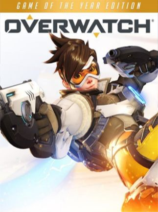

Para comprar clique aqui

Para comprar clique aqui

Para comprar clique aqui

Para comprar clique aqui
Para comprar clique aqui
| Jogos Disponiveis | Informações dos jogos | Valores/Compras |
|---|---|---|
|
O jogo traz o conceito de um Battle Royale, onde diversas pessoas entram num vasto campo de batalha desarmados e sem mantimentos, e terão que buscar itens e armas para batalhar em uma cenário onde apenas um sairá vivo(ou a equipe) e declarado vencedor. Você já pode ter ouvido falar sobre esse conceito graças a uma das obras de diversas mídias que já saíram antes de PUBG, como os livros ou filmes da série Jogos Vorazes e o game H1Z1.Para ver fotos e vídeos sobre os jogos, clique aqui. | R$60,00 Para comprar clique aqui |
|
Counter-Strike: Global Offensive (CS: GO) expandirá na jogabilidade de ação baseada em equipes na qual foi pioneiro quando foi lançado há 12 anos. CS: GO contém novos mapas, personagens e armas, além de conter versões atualizadas de conteúdos do CS clássico.Para ver fotos e vídeos sobre os jogos, clique aqui. | R$30,00 Para comprar clique aqui |
|
A jogabilidade é mostrada em uma perspectiva de primeira ou terceira pessoa e o mundo pode ser atravessado a pé ou com veículos. Os jogadores controlam três protagonistas e podem alternar entre eles durante e fora das missões. A história é centrada em sequências de assaltos, com muitas missões envolvendo a jogabilidade de tiro e direção. Um sistema de "procurado" define a resposta e agressividade das forças da lei contra os crimes cometidos pelo jogador. O modo multijogador, Grand Theft Auto Online, permite que até trinta jogadores explorem o mundo e entrem em partidas competitivas ou cooperativas.Para ver fotos e vídeos sobre os jogos, clique aqui. | R$70,00 Para comprar clique aqui |
|
Como os outros títulos da série, foca-se sobretudo no trabalho em equipe e realismo. No entanto, têm algumas diferenças para os outros jogos, baseando-se fortemente na cooperação entre os jogadores e na destruição de ambientes fechados. No entanto, Siege não tem nenhuma apenas os cenários campanha, apesar de oferecer o modo Cenários, onde o jogador pode aprender a utilizar os operadores, e oferece também o modo online.Para ver fotos e vídeos sobre os jogos, clique aqui. | R$100,00 Para comprar clique aqui |
|  | Em meio a uma crise global, uma força-tarefa internacional de heróis tenta restaurar a paz em um mundo dividido pela guerra. Eles são a OVERWATCH. Esses combatentes acabaram com a crise e mantiveram a paz por décadas, dando início a uma era de exploração, inovação e descobertas... mas a influência da Overwatch se enfraqueceu com o passar dos anos, e cada um deles acabou seguindo seu próprio caminho. Hoje, com a volta dos conflitos por todo o mundo, está na hora de reunir as lendas do passado e recrutar os heróis do futuro.Para ver fotos e vídeos sobre os jogos, clique aqui. | R$160,00 Para comprar clique aqui |